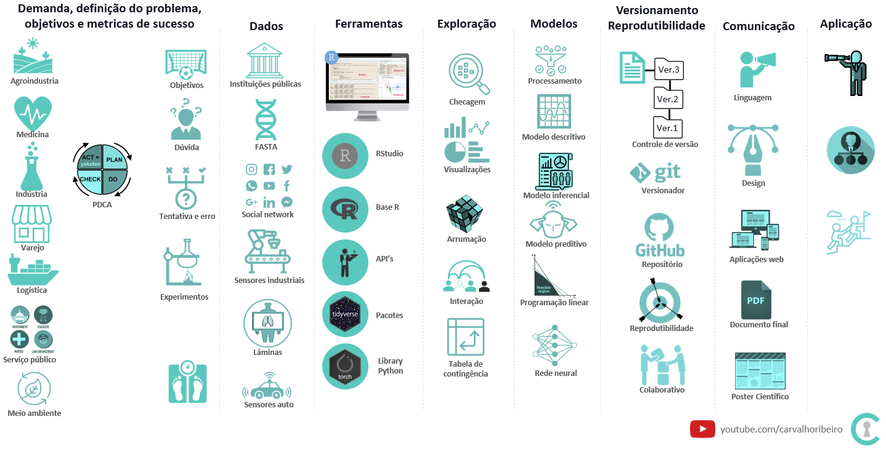
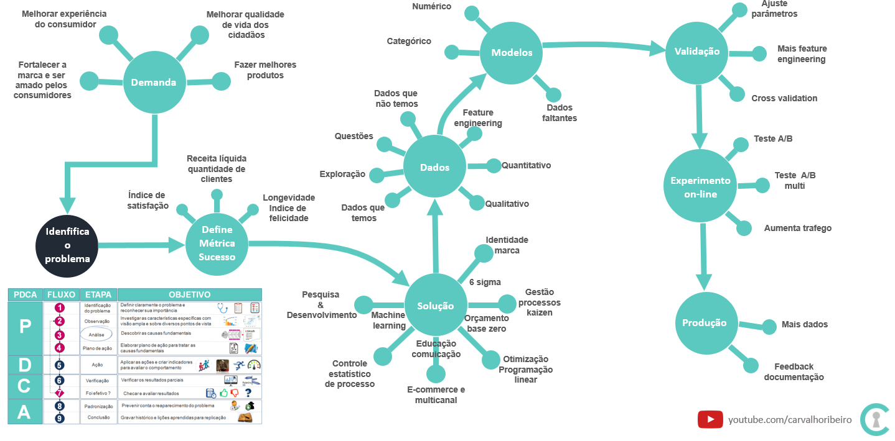

Capitulo 1 Conceitos
1.1 Projeto de pesquisa
Explorando os aspectos práticos, busquei sintetizar o conceito de ciência atribuido a Tales de Mileto 650AC ao projeto de pesquisa de melhoria contínua onde é possível observar algumas características:
- Perguntar o porque e tentar encontrar uma resposta racional para a questão.
- Observar, explorar, descrever e analisar fenômenos e fatos existentes sob diversos pontos de vista.
- Usar fatos existentes e tentar reproduzir o experimento com novos dados.
- Registrar etapas e procedimentos a fim de permitir a reprodução posterior.
- Ao concluir o experimento, descrever o valor das descobertas para sociedade.
- Comunicar os resultados, a aplicação prática das descobertas e possibilitar que esses possam ser compreendidas por civilizações posteriores e que estas, possam usar esse conhecimento em benefícios de suas comunidades.

Figura 1 - Etapas em um projeto de pesquisa de melhoria contínua
1.2 Melhoria contínua
É a busca sem fim pela melhoria e aperfeiçoamento naquilo que faz. Também conhecida como Kaizen que vem do termo japonês Kai(mudança)-Zen(melhor) o qual segue o seguinte fluxo:
- Etapa 1: Definir o problema. Qual o problema?
- Etapa 2: Esclarecer o problema.
- Etapa 3: Definir os objetivos
- Etapa 4: Identificar as causas do problema
- Etapa 5: Desenvolver as ações
- Etapa 6: Executar as ações
- Etapa 7: Avaliar os resultados
- Etapa 8: Buscar por novas melhorias, ensinar e aprender fazendo.

Figura 2 - Fluxo em um projeto de melhoria contínua
1.3 Termos usados no livro
- e.g é uma abreviação para a palavra por exemplo e vem do latin exempli gratia.
- PDCA é um método de análise e solução de problemas.
- modelo preditivo é o nome em estatística para machine learning em ciência da computação.
- pré processamento é o nome em estatística para feature engineering em ciência da computação.
- tidyverse é um pacote em R que ajuda na importação, arrumação, visualização e demais trabalhos com dados.